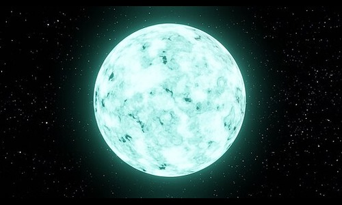
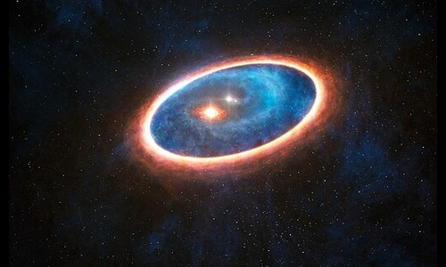
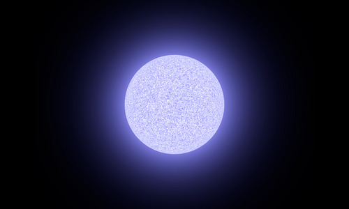
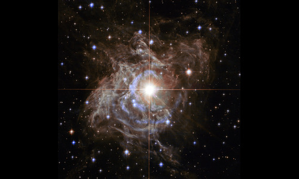
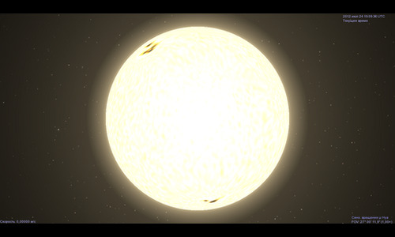
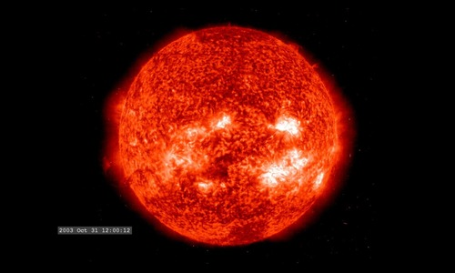
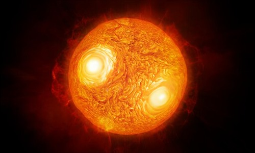

Star Information
*Some of the images are virtually created others are real







A type star
Sources
European Southern Observatory
- Binary Star
- Red Super Giant Star
- https://www.eso.org/public/
Creative Commons
- Red Dwarf Star
- B Type Star - Merikanto
- K Type Star - Celestia
- A Type Star - KKolaczynski
- https://commons.wikimedia.org/wiki/Main_Page
NASA Hubble Space Telescope
- Cepheid Variable Star
- https://www.nasa.gov/